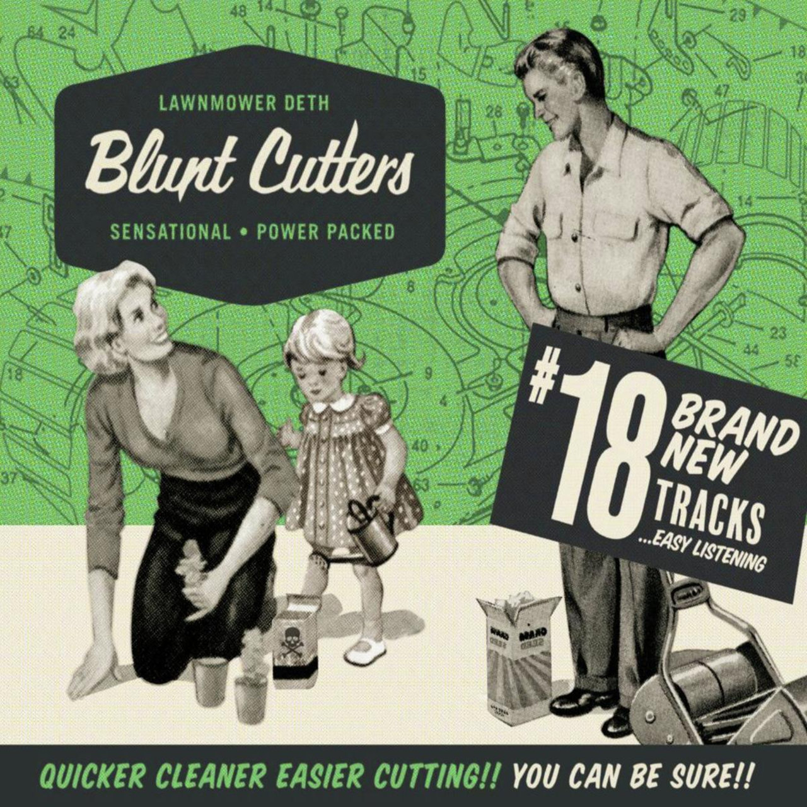

Thrash ve speed metalin zirve yaptığı 80’li yılların sonu 90’ların başında sert müzik yapan grupların imajı genelde korkunç, asık suratlı, öfkeli ve asiydi. Bu, o dönem gruplarının olmazsa olmaz özelliğiydi. Lawnnmower Deth işte tam o dönemde eğlenceli, zıpır, absürt şarkı sözleri, çizgi filmlerden fırlamış efekt ve albüm kapaklarıyla heavy metal dünyasının ortasına düşüverdi.

İlk gördüğüm zamanları hatırlıyorum da “Bunlar da ne böyle!†demiştim ve çok ilgilenmemiştim. Ama sonraları hem sert ve hızlı müzikleri, kısa, karmaşık, zorlu ve akılda kalıcı riffleriyle istemeye istemeye dinlemeye başlamış sonrasında sıkı bir takipçileri olmuştum. Thrash Metal / Punk Rock tarzında müzik yapan İngiliz grup 1989 yılında Metal Duck ile split albümleri Mower Liberation Front / Quack’em All ve ardından 1990 yılında çıkardıkları Ooh Crikey! It’s Lawnmower Deth ile zirveye ulaşmış 1992 tarihli Return of the Fabulous Metal Bozo Clowns ve 1994 yılındaki Billy ile ilk albümlerindeki enerjiyi yakalayamamış, sonrasında da dağılıp gitmişlerdi.
2022 yılında yeni albümleri Blunt Cutters’ı çıkardılar. Aradan geçen 28 sene sonrasında yeni albümlerinde ilk albümlerindeki tadı alabilmek mümkün. Açılış parçası Into the Pit, Raise Your Snails, Blunt Cutters ve farklı tarzdaki Agency of C.O.B. albümdeki en başarılı parçalar.
🤟🼠🤟🼠🤟🼠🤟ğŸ¼